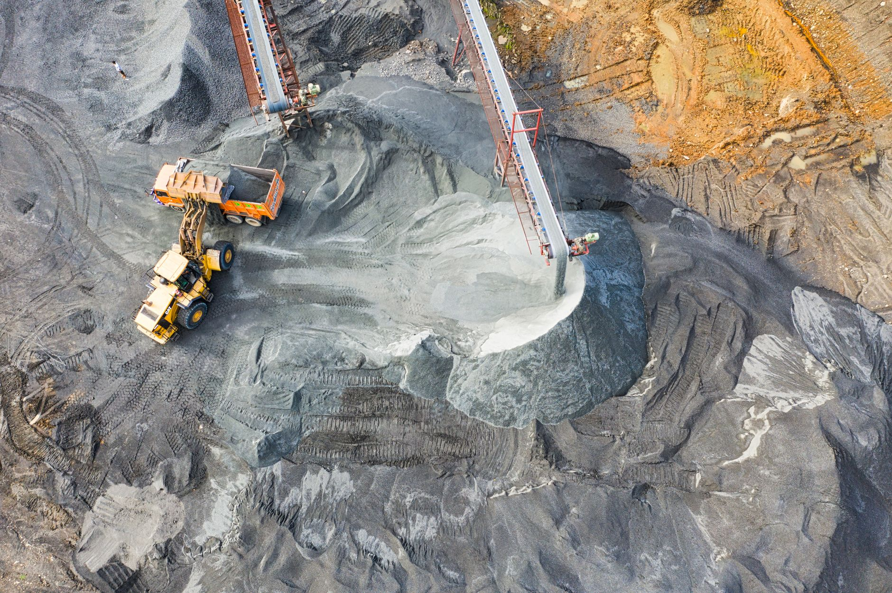

중국, 북한 텅스텐 싹쓸이…AI·반도체 핵심금속 장악 가속

중국이 북한산 텅스텐(Tungsten)을 대규모로 매입하며 AI 반도체와 첨단 방위산업에 필수적인 희귀금속 공급망 장악을 가속화하고 있다. 텅스텐은 반도체 배선 소재, 절삭공구, 방산 무기 등에 광범위하게 사용되는 전략 금속으로, 중국이 글로벌 생산량의 약 85%를 차지하고 있다.
북한은 세계 10위권의 텅스텐 매장국으로, 추정 매장량은 약 3만 톤에 달한다. 국제 제재로 공식 수출이 막혀 있음에도 불구하고, 중국과의 비공식 무역 루트를 통해 연간 수백 톤 규모의 텅스텐 정광(精鑛)이 중국으로 유입되고 있는 것으로 파악된다.
일본 도쿄특파원 보도에 따르면 중국은 최근 들어 북한산 텅스텐 매입 물량을 전년 대비 30% 이상 늘린 것으로 추정된다. 이는 AI 서버용 반도체 수요 폭발에 따른 텅스텐 소비 급증과 맞물려, 중국이 전략적으로 비축량을 늘리고 있는 것이라는 분석이 나온다.
텅스텐은 반도체 제조 공정에서 금속 배선층(Metal Layer)과 장벽 금속(Barrier Metal)으로 활용된다. 특히 5나노 이하 첨단 공정에서는 구리 배선의 대체재로서 텅스텐 사용량이 증가하는 추세다. AI 가속기용 고성능 칩 제조에 필수적인 소재인 만큼, 공급 불안은 곧 반도체 생산 차질로 이어질 수 있다.
중국은 텅스텐 외에도 갈륨, 게르마늄, 인듐 등 반도체·전자 산업 핵심 희귀금속에 대한 수출 통제를 강화하고 있다. 중국 상무부는 2023년부터 갈륨·게르마늄 수출을 허가제로 전환했으며, 이를 대미(對美) 압박 카드로 활용하는 양상이 뚜렷해지고 있다.
한국무역협회 자료에 따르면 국내 텅스텐 수입의 약 62%가 중국산에 의존하고 있다. 국내 반도체·공구 업계가 중국의 공급 통제에 직접적으로 노출돼 있는 셈이다. 포스코홀딩스와 한국광해광업공단이 텅스텐 대체 공급원 발굴에 나서고 있지만, 단기간 내 해소는 어렵다는 게 업계의 공통된 인식이다.
전문가들은 중국의 희귀금속 장악 전략을 단순한 경제적 행위가 아닌 지정학적 압박 수단으로 봐야 한다고 경고한다. 한국지질자원연구원 관계자는 '텅스텐, 갈륨, 인듐 등은 대체재가 없는 소재들로, 중국이 공급을 끊으면 국내 반도체·방산 산업 전반이 타격을 받는다'고 밝혔다.
미국과 유럽은 중국의 희귀금속 공급망 의존도를 낮추기 위한 다자 협력 체계를 구축하고 있다. 미국은 광물안보파트너십(MSP)을 통해 한국, 일본, 호주 등과 함께 대체 공급망 확보에 나서고 있으며, 카자흐스탄·몽골 등 중앙아시아 국가에 대한 광물 개발 투자도 확대하는 추세다.
국내 정부 차원에서도 핵심광물 확보 전략이 강화되고 있다. 산업통상자원부는 '핵심광물 확보 전략 2.0'을 통해 텅스텐을 포함한 33종 핵심광물의 특정국 의존도를 2030년까지 50% 이하로 낮추겠다는 목표를 제시했다. 재활용(Urban Mining) 사업 확대도 병행 추진 중이다.
글로벌 텅스텐 가격은 2025년 하반기 이후 공급 불안 우려로 꾸준히 상승세를 유지하고 있다. 런던금속거래소(LME) 기준 텅스텐 분말 가격은 연초 대비 약 18% 올라 kg당 40달러를 넘어섰다. 시장에서는 중국의 추가 수출 통제 조치가 발동될 경우 연말까지 50달러를 상회할 것으로 내다보고 있다.
국내 소재 기업들은 텅스텐 재활용 기술 개발과 해외 광산 지분 투자를 병행하며 리스크 분산에 나서고 있다. 이구스, 알코닉 코리아 등은 텅스텐 스크랩 재활용률을 현재 35%에서 60%까지 끌어올리는 기술 개발 프로젝트를 진행 중이다. 성공할 경우 중국산 의존도를 연간 20%포인트 낮출 수 있다는 추산이 나온다.
향후 텅스텐을 둘러싼 자원 패권 경쟁은 더욱 심화될 것으로 보인다. AI 반도체와 방위산업 수요가 동시에 급증하는 구조에서 텅스텐의 전략적 가치는 계속 높아질 수밖에 없다. 전문가들은 '단순한 수입선 다변화를 넘어, 국가 차원의 전략비축 물량 확대와 기술 개발 지원이 병행되어야 한다'고 강조한다.